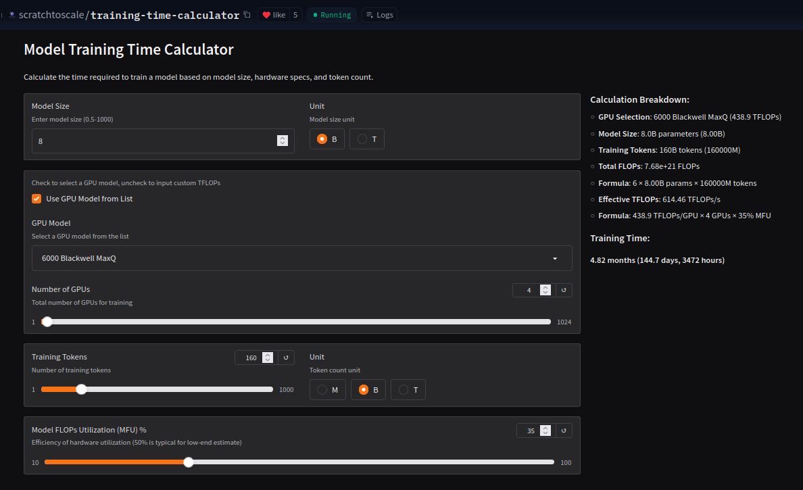
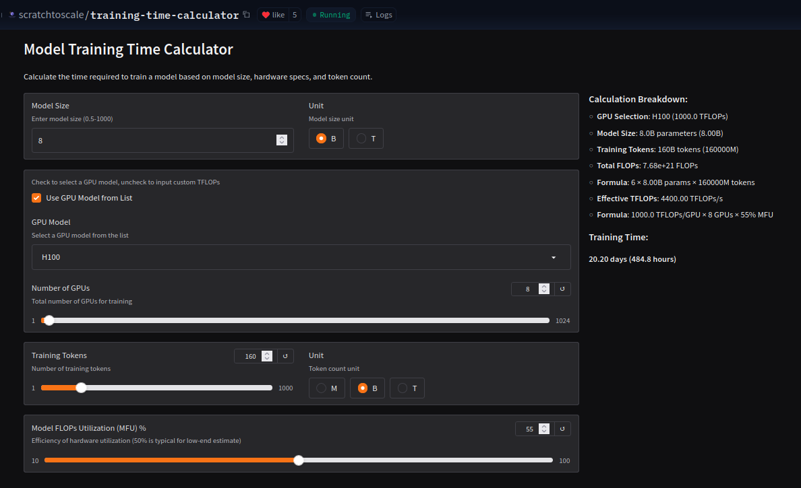
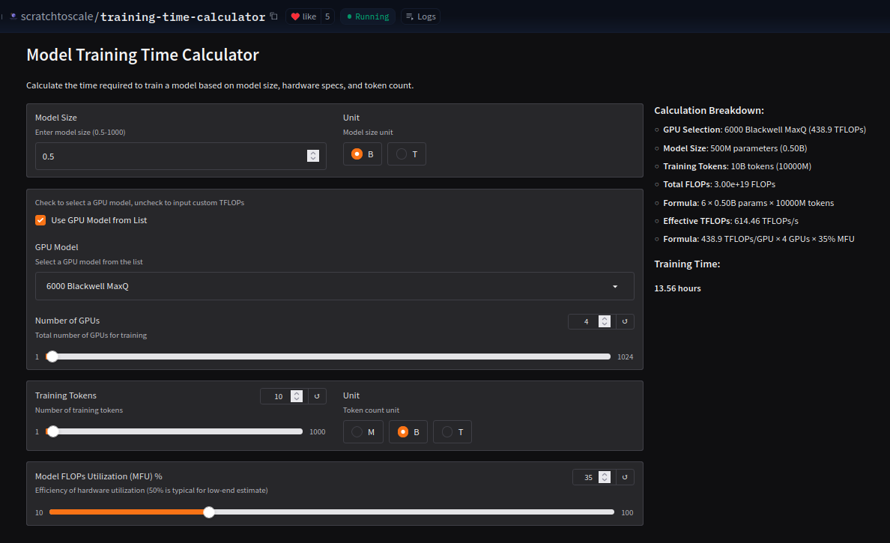
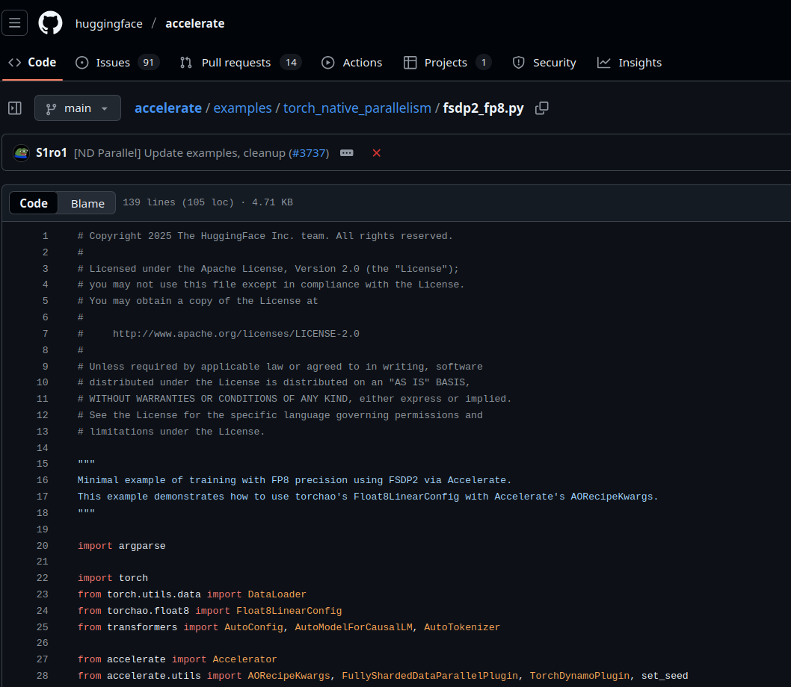
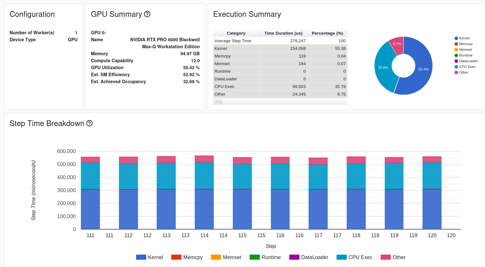
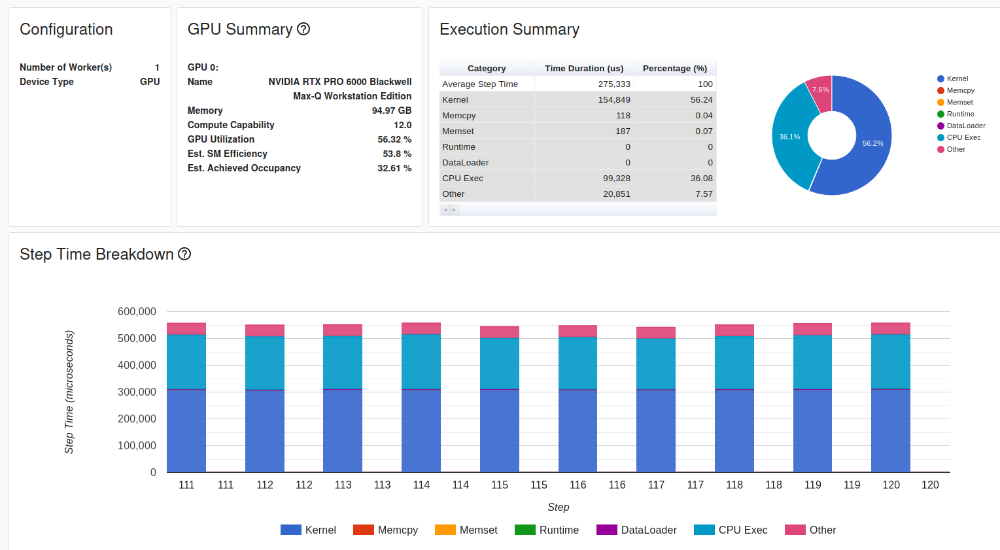
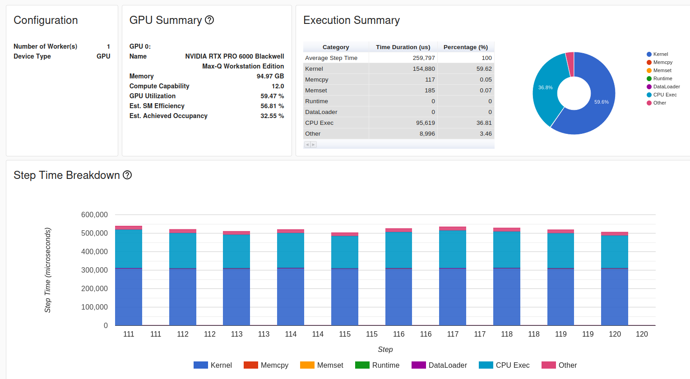
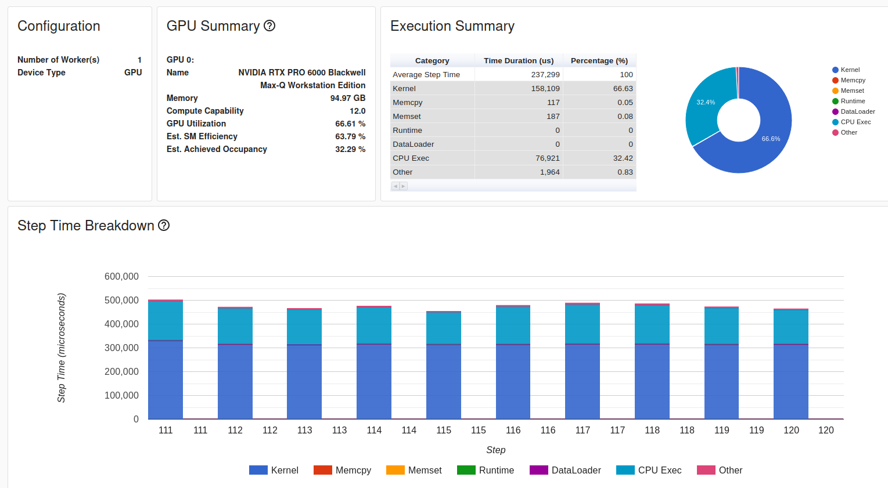
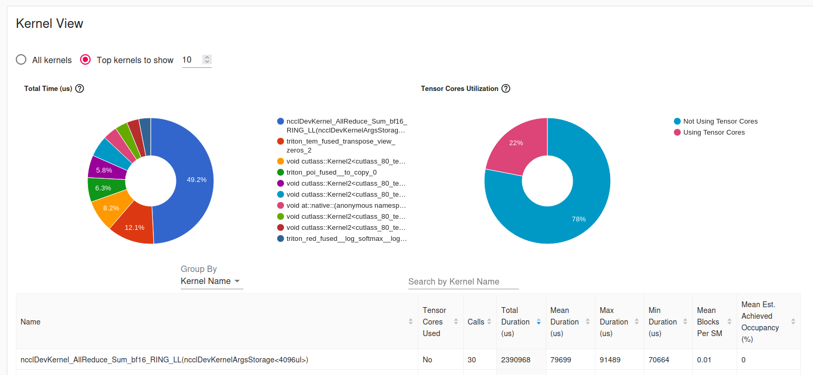
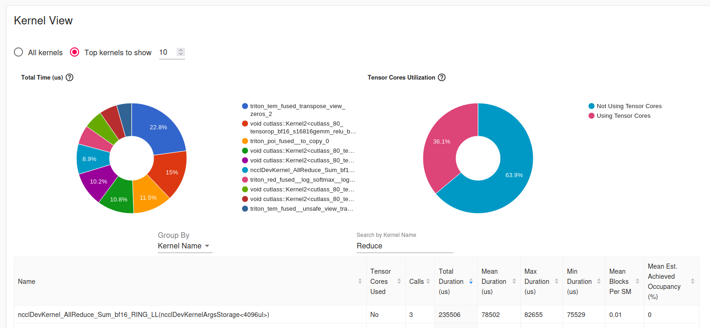

Or: how to optimize your training loop as far as you can
The Depression Calculator™

The Depression Calculator™

The Depression Calculator™
The Depression Calculator™

model_type: qwen3_moe
architectures: ["Qwen3MoeForCausalLM"]
vocab_size: 151936
hidden_size: 896
num_hidden_layers: 12
num_attention_heads: 16
num_key_value_heads: 16
hidden_act: silu
# === MoE ===
num_experts: 16
num_experts_per_tok: 2
moe_intermediate_size: 512
# === Dense MLP baseline ===
intermediate_size: 4096
Raw BF16 using a core script:
Results:
Results:
model = AutoModelForCausalLM.from_config(
AutoConfig.from_pretrained("./config.json", use_cache=False),
torch_dtype=torch.bfloat16,
attn_implementation="flex_attention"
)Results:


Pin memory:
Pin memory:
Pre-tokenize:

for step, batch in enumerate(dataloader):
if step >= total_num_steps:
break
with torch.cuda.stream(prefetch_stream):
next_batch = {
k: v.to(
device=accelerator.device, non_blocking=True
)
for k, v in batch.items()}
torch.cuda.current_stream().wait_stream(prefetch_stream)
batch = next_batch
outputs = model(**batch)
loss = outputs.lossResults (not helpful):

See a linear-ish speedup
1 -> 4 GPUs, keeping local batch size
19.6M tokens seen across 200 batches
Results (vs baseline):
Results:
Now we’re doing really good
What’s our bottleneck?

The 0.08s/all_reduce (on PCIe4, 0.04s on PCIe5)

Optimal batch size
pin_memory=True
Offline data
CUDA Buffers (showed improvement in multi-GPU)
AdamW(fused=True)
Fused GEMM
44,942 -> 63,627 tok/s (41.57% speedup)
Time to 10B tokens: 61.80 hours -> 43.67 hours
Verify single GPU results align at scale
Minimize comms as much as possible
Saturate ~1M tok/batch using gradient accumulation
63,627 -> 154,870 -> 210,377 tok/s (230% | 35.85%)
43.67 -> 17.94 -> 13.2 hours